Dini Merasim
Sevdiklerinizle birlikte anma, dua ve ibadet için tek uygulama.
Yeni sürümü yayından önce denemeniz için sizi test grubuna davet ediyoruz.
Kaydırın →
Neden Dini Merasim?
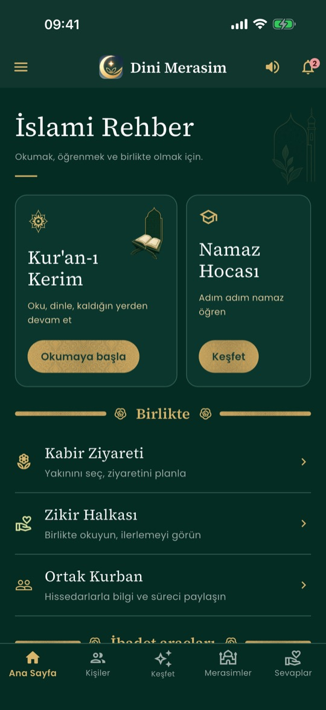
İslami Rehber
Uygulamanın kapısı: her şey tek ekranda.
- Kur'an-ı Kerim, Namaz Hocası, Dini Bilgiler, Kabir Ziyareti, Zikir Halkası
- Namaz vakitleri, kıble, en yakın cami, yakındaki kutsal mekânlar
- Kâbe Canlı, ilahiler, dini filmler, Ortak Kurban, Akîka
- Kaza namazı ve oruç takibi; Sağlık Köşesi: eczane ve sağlık kuruluşu
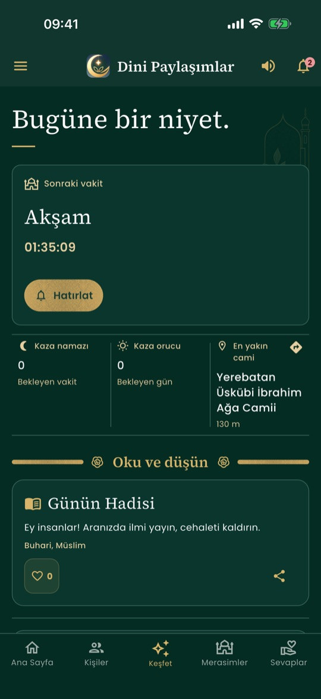
Keşfet
Günün ayeti ve hadisi, Cuma mesajları, bayram tebrikleri, Ramazan'da imsakiye.
- Maşallah isteği, salavat anma, Gönül Perdesi, Huzur Kapısı, Rahmet Kapısı
- Paylaşılan merasim, ilahi, film ve akîkalara tepki verin
- Bildirime dokununca ilgili paylaşım açılır ve vurgulanır
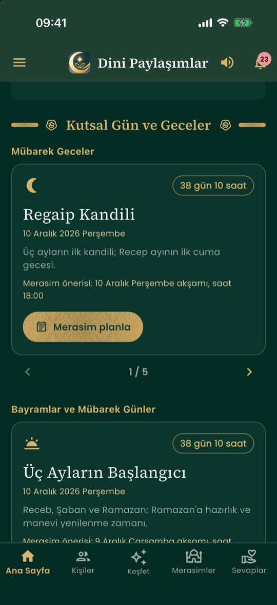
Kutsal Gün ve Geceler
Kandiller, bayramlar, arefe, Aşure, Hicrî yılbaşı, Ramazan ve Üç Aylar; Diyanet takviminden, geri sayımla.
- “Merasim planla”: güne özel program, akşam 18:00 seçili; dilediğiniz gibi değiştirin
- Merasimi tamamlayınca Keşfet'te paylaşın, isterseniz adınız gizli
- Merasime 2 gün kala akşam bir öneri bildirimi
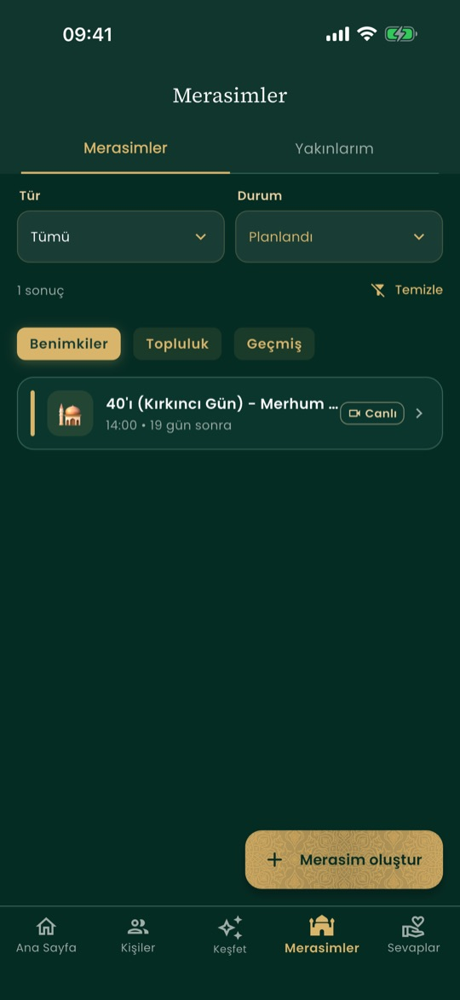
Merasim düzenleyin
Mevlüt, yıl dönümü, 7'si, 40'ı, 52'si, kandil, hatim duası ve özel programlar.
- Program akışını sure, mevlid bahri, kaside ve dualarla kurun
- Davetliler canlı merasime katılır; ayet ayet takip, büyük yazı
- Merasim yalnız sizin ve davet ettiklerinizin
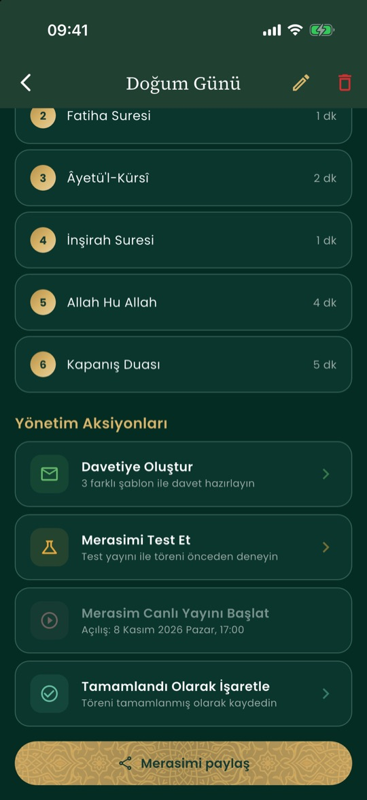
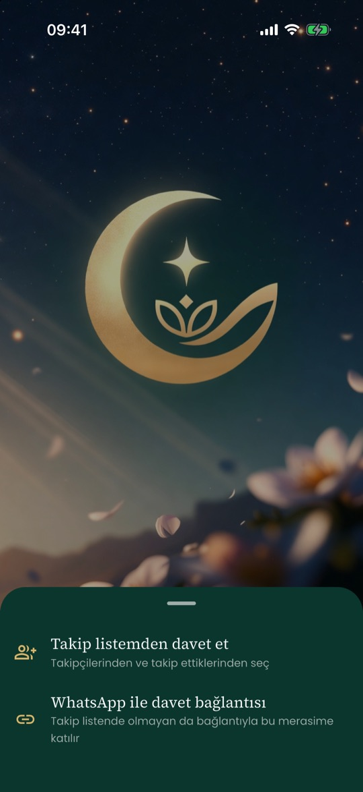
Düzenleyin, paylaşın
Planladığınız merasimin tarihini, saatini, yerini ve programını sonradan değiştirin.
- Değişiklik ya da iptal olunca davetlilere bildirim gider
- “Merasimi paylaş”: takip listenizden davet edin ya da WhatsApp bağlantısı gönderin; bağlantıyla gelen, takipte olmasa da davetli olur
- Canlı merasimde o an kimlerin bağlı olduğunu herkes görür; merasime uygun hazır mesaj ve emoji
- Tamamlanan merasim silinmez, hatırası kalır
Sevdiklerinizi hatırlayın
Dini Merasim yalnız anma için değil; hayattaki sevdiklerinizin güzel günleri için de.
Doğum günü
Dua ve şükür meclisi: Âyetü'l-Kürsî, İnşirah, kaside ve hayırlı ömür duası. 3 gün önce ve günü sabah hatırlatma; ana sayfada yaklaşan doğum günleri.
Dua kartı ve davet
Kişinin adı, ayet ve duayla görüntü olarak paylaşın. Yakınınızın kaydını hesabına bağlayın; onaylarsa kendisi için kurulan meclisi görür ve katılır.
Evlilik yıl dönümü ve özel programlar
Yıl dönümüne bir ay kala hatırlatma. Bebek mevlidi, yeni gelin, yeni ev, yeni araba, askere uğurlama ve akîka şükür meclisi.
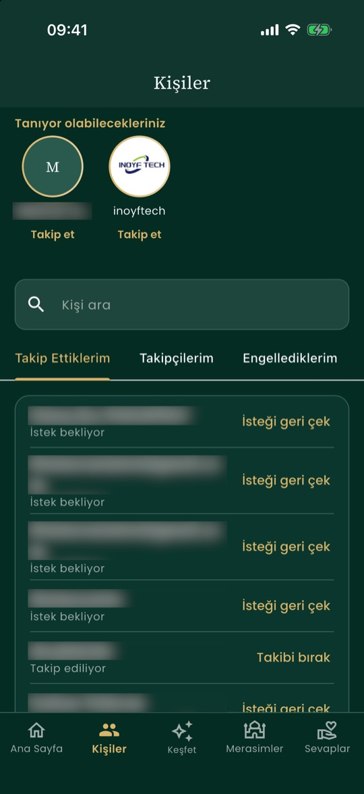
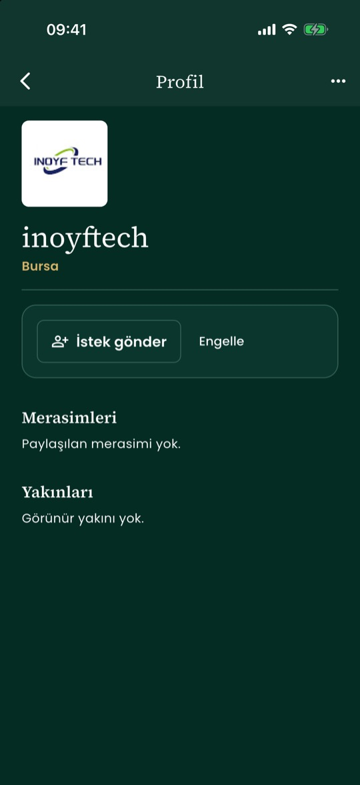
Takip edin, takipleşin
Tanıdıklarınızı bulun; merasimlerden ve güzel günlerden haberdar olun.
- “Tanıyor olabilecekleriniz” ve isimle kişi arama
- Takip isteği gönderin; karşı taraf onaylayınca takipleşirsiniz, isteği geri çekebilirsiniz
- Takipçilerinizi çıkarın ya da engelleyin; profiliniz açık ya da gizli
- Takip ettiklerinizi merasimlerinize tek dokunuşla davet edin
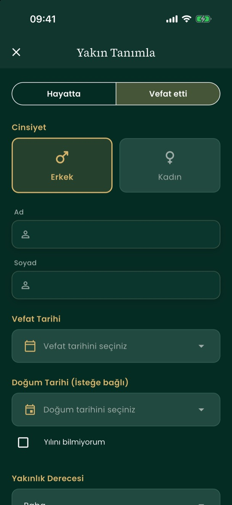
Yakınlarınızı ekleyin
Hayattaki ve vefat etmiş yakınlarınızı bir kez tanımlayın; gerisini uygulama hatırlatır.
- Ad, yakınlık derecesi, doğum ve vefat tarihi (yılı bilinmese de olur)
- Vefat edenler için 7'si, 40'ı, 52'si ve yıl dönümü; hayattakiler için doğum günü hatırlatması
- Yakınınız gizli ya da takipçilerinize görünür; kaydı yakınınızın hesabına bağlayabilirsiniz
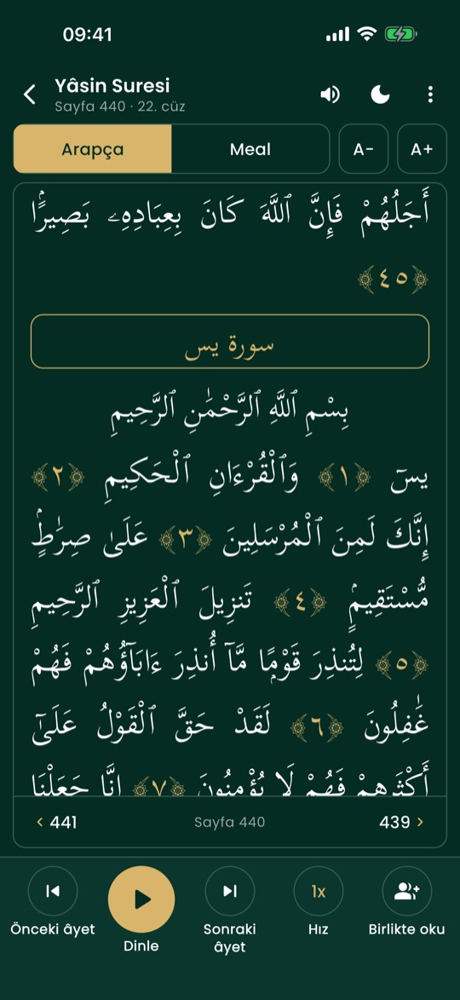
Kur'an-ı Kerim
- Arapça metin ve Diyanet meali yan yana
- Hafız sesiyle dinleyin, okunan kelime işaretlenir
- Kaldığınız yerden devam; sevdiklerinizle birlikte okuma
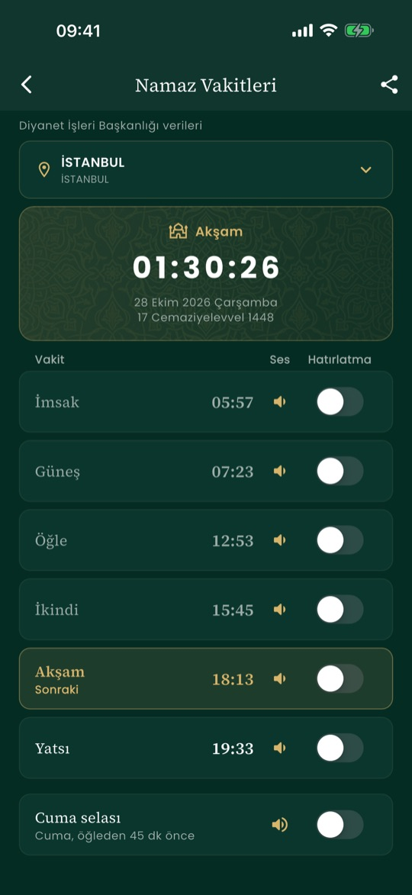
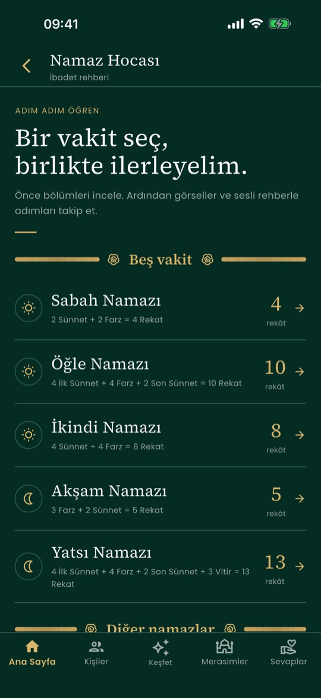
Vakitler ve Namaz Hocası
- Türkiye ve yurt dışı için Diyanet vakitleri, vakit hatırlatması
- Kıble yönü; kaza namazı ve orucu takibi
- Adım adım namaz öğrenme
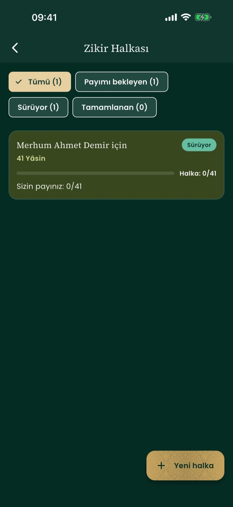
Zikir Halkası
Bir yakınınızın ruhuna ya da bir niyet için halka kurun.
- Yâsin, hatim, İhlâs, salavat, istiğfar ya da kendi zikriniz
- Takip ettiklerinizi davet edin, pay önerilir
- Okunan herkes için anlık güncellenir
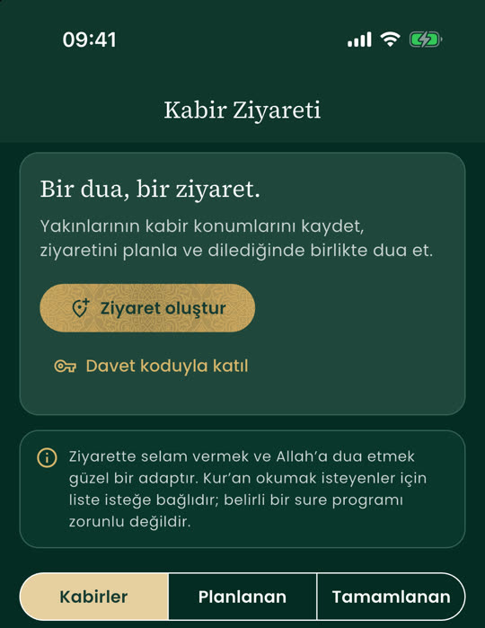
Kabir Ziyareti
- Kabir konumunu haritada kaydedin, ziyareti planlayın
- Okuyan hocayı seçin; davetliler canlı katılıp okumayı birlikte izler
- WhatsApp bağlantısıyla davet; ziyaret duası merhumun adıyla
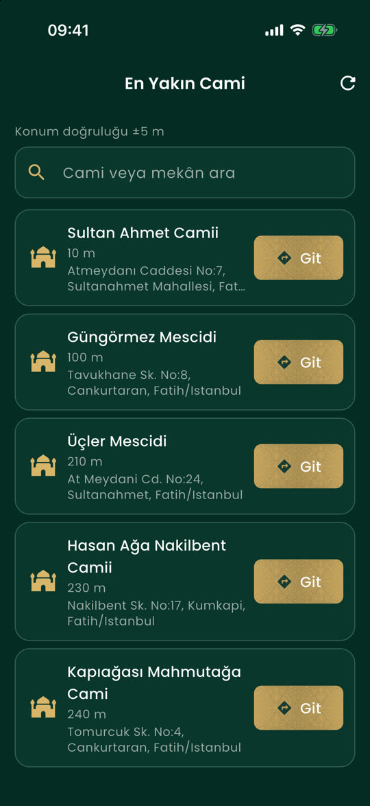
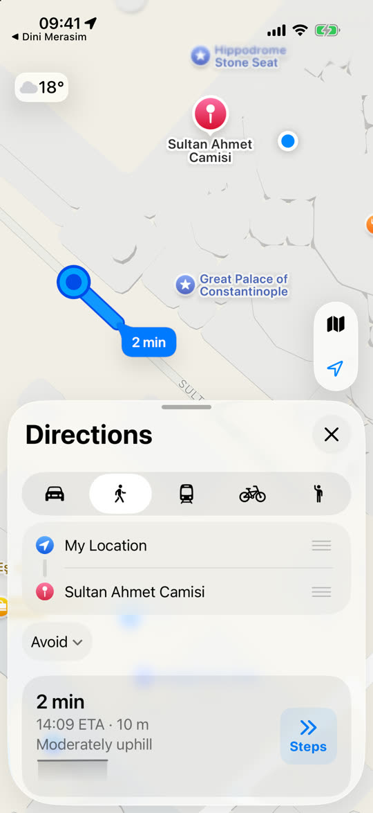
En yakın cami, tek dokunuşla yol
Konumunuza göre en yakın camiler mesafesiyle; “Git” ile haritada yol tarifi açılır.
- Cami ya da mekân adıyla arama
- Yürüyerek, arabayla ya da toplu taşımayla rota
- Konum yalnız arama için kullanılır
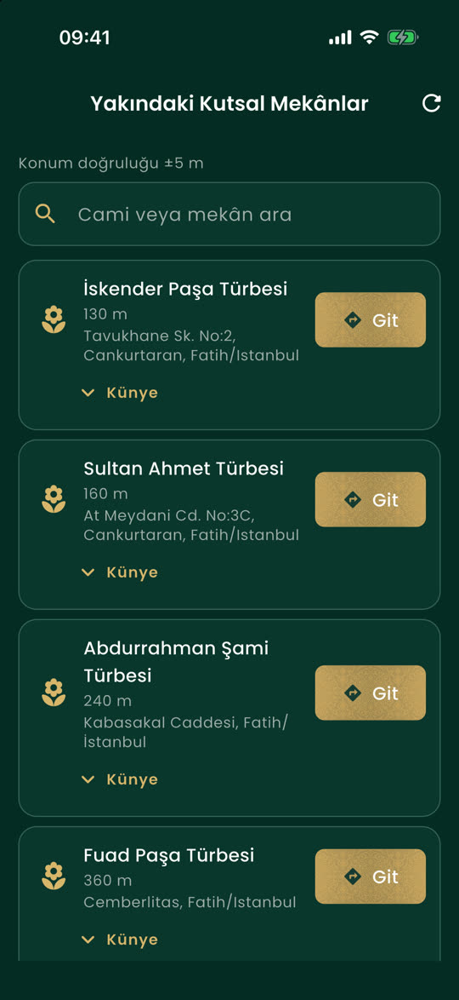
Yakındaki kutsal mekânlar
Türbe ve makamlar mesafesiyle, künyesiyle; “Git” ile yol tarifi.
- Konumunuza en yakın türbe ve makamlar
- Künye: kim, ne zaman, kaynağıyla
- Kabir ve türbe ziyaretini planlamak için
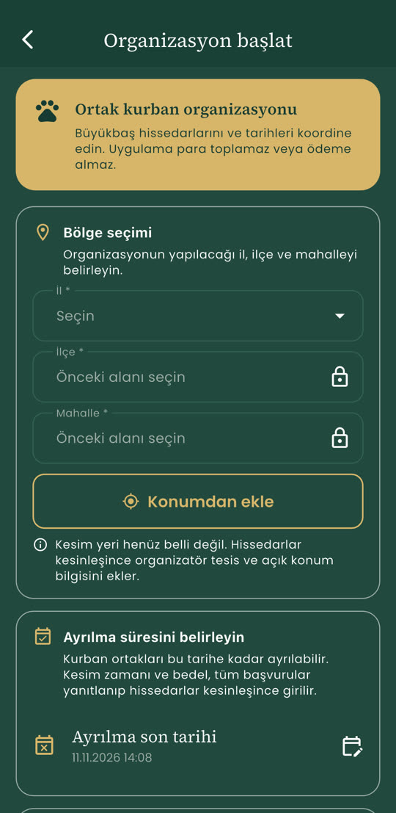
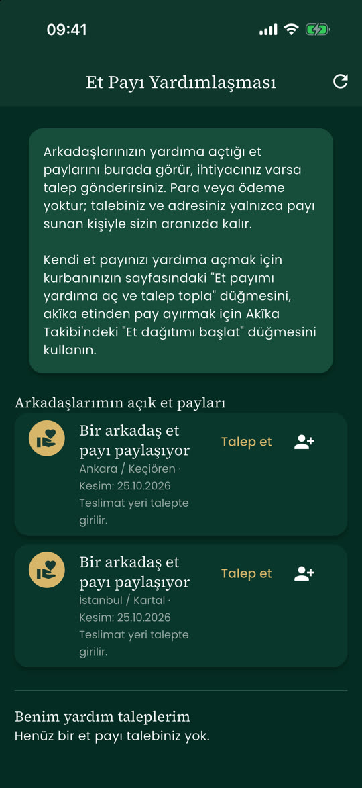
Ortak Kurban ve et payı
Büyükbaş kurbanı hissedarlarınızla birlikte organize edin; etten ayrılan payı ihtiyacı olana ulaştırın.
- Organizasyonu başlatın: il, ilçe, mahalle ve ayrılma son tarihi; en çok 7 hisse
- Başvuru, kesim, hayvan fotoğrafı ve pay teslimi tek yerde
- Et payı yardımlaşması: arkadaşlarınızın açtığı paylara talep gönderin; adresiniz yalnız payı sunanla paylaşılır
- Uygulama para toplamaz, ödeme almaz
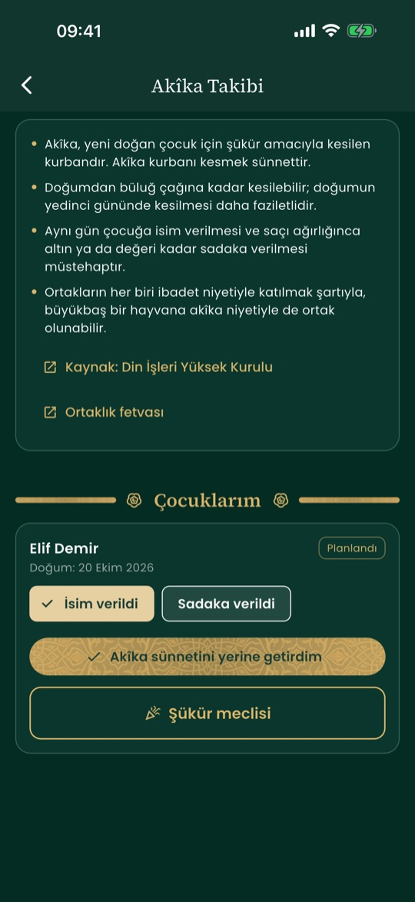
Akîka takibi
- Yeni doğan için şükür kurbanını planlayın ve kaydedin
- Din İşleri Yüksek Kurulu fetvası özetiyle
- Dilerseniz Keşfet'te paylaşın, şükür meclisi düzenleyin
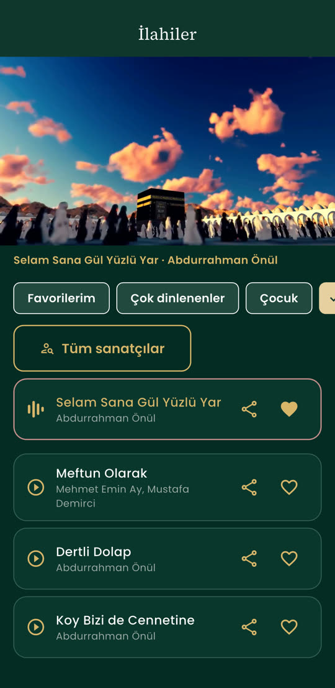
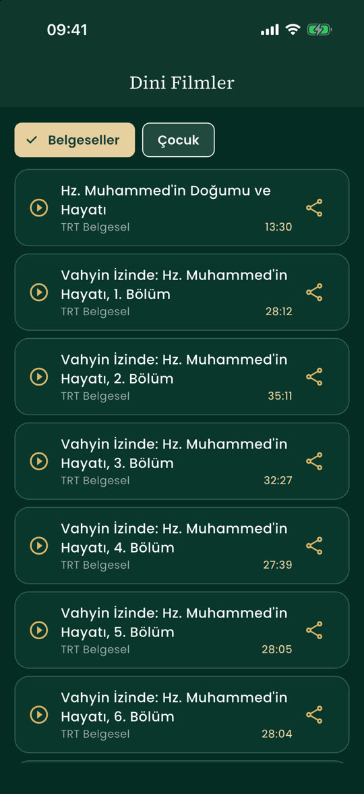
İlahiler ve dini filmler
- Seçme ilahiler resmî kanallardan, uygulama içinde videosuyla çalar
- Favorilerinizi ayırın, sanatçıya göre süzün, çocuk ilahileri
- Diyanet ve TRT yapımı belgeseller ve çocuk filmleri
- Beğendiğinizi Keşfet'te paylaşın
Tüm özellikler
Teste katılın
Android
Google hesabınız test listesine eklendikten sonra bu bağlantıdan katılın, ardından Google Play'den yükleyin.
Android testine katıliPhone
E-posta adresinizi gruba yazın. TestFlight davetini alınca TestFlight uygulamasından yükleyin.
TestFlight'ı indirGeri bildirim
Bir sorun görürseniz ekran görüntüsüyle gruba yazın; iPhone'da TestFlight'tan da gönderebilirsiniz. Teşekkür ederiz.